Caen. Hermanville 2009

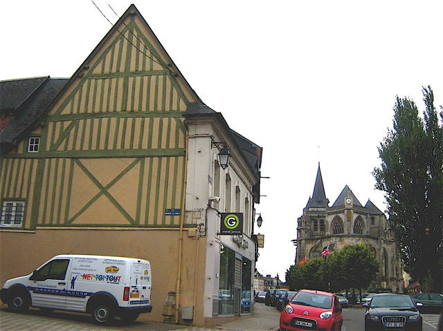
Fête répartie à Caen, Lion-sur-mer et Hermanville. JF. Lorente a réussi à faire rattacher le cerf-volant à cet ensemble ! Direction Hermanville, donc, via les routes pittoresques et les vieilles églises, bien sûr...

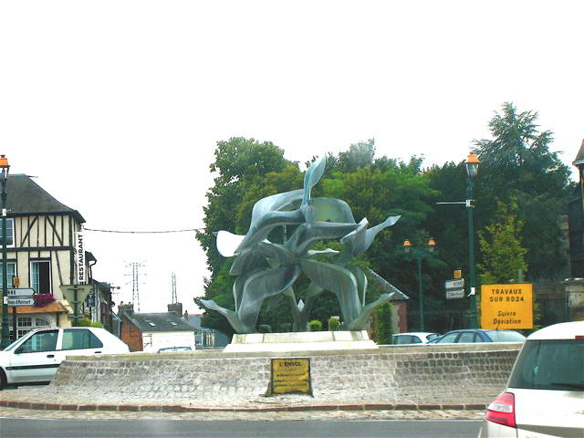
A un rond-point, un groupe d'oies à l'envol me souhaite bonne route...

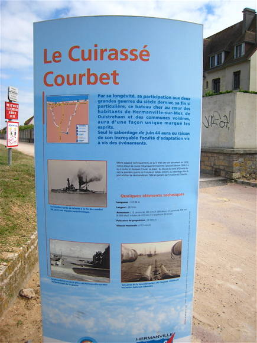
Rendez-vous place Courbet. Ce vieux cuirassé, depuis longtemps out, a terminé en beauté en se sabordant avec 4 autres bâtiments pour créer un port artificiel devant Hermanville au Débarquement...

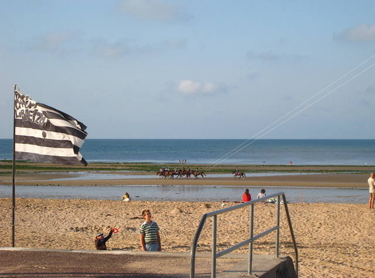
Le haut de la plage, hors marées, est relativement large. Le bas est très plat et reste toujours ruisselant, les charistes n'apprécieront pas beaucoup, bien que ce soit roulant !

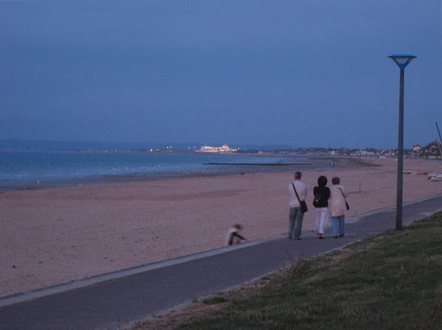
A l'Est, pas très loin, c'est Ouistreham d'où partent les ferries pour l'Angleterre !

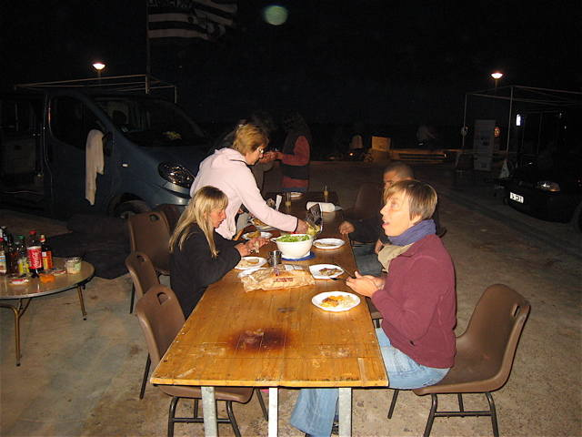
Vendredi soir, chacun pour soi. Les Pirates se montent des tables amenées pour les ateliers du lendemain...

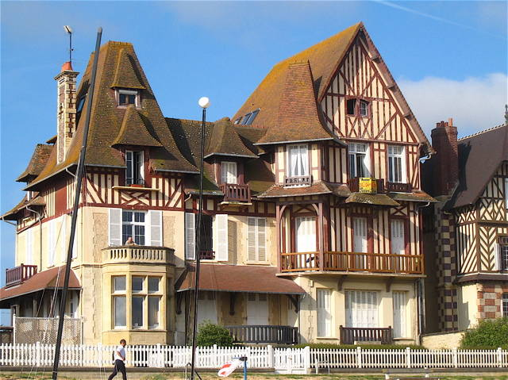
Samedi matin, coup d'oeil sur la belle architecture des riches maisons du bord de mer... Celle-ci est à vendre, si vous cherchez un cabanon pour passer l'été...

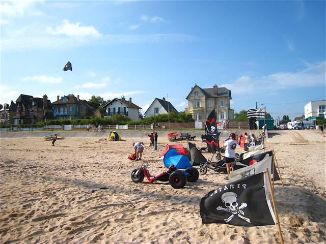
Les Pirates s'empressent de marquer la plage, pour réserver une zone à nos diverses activités !

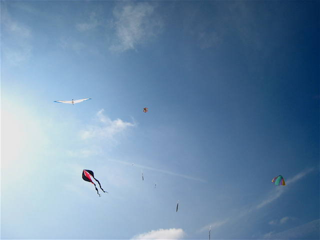
Il fait beau, et il y a du vent. Les cerfs-volants montent bien, mais pas en très grand nombre !

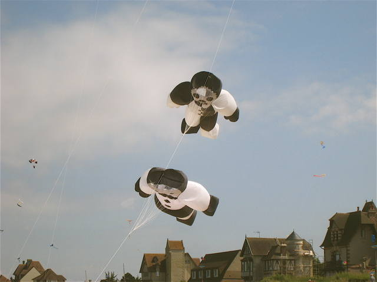
Jean-François a monté ses bonshommes, noirs et blancs, bien sûr...

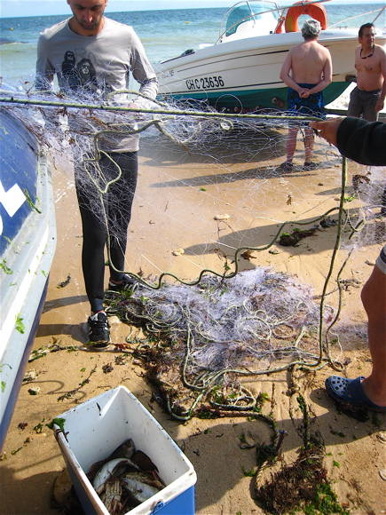
Des pêcheurs ont remonté leurs filets : 2 poissons, quelques crabes et araignées, pas très riche, le bilan !

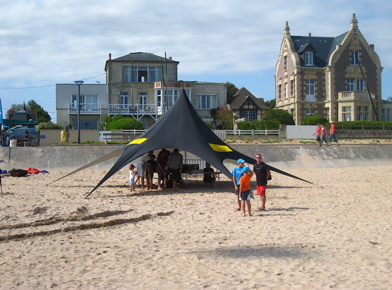
Côté gauche, c'est le domaine des Kite-surfers. Ils ont installé une grande tente, il doit y avoir une compétition ce week-end !

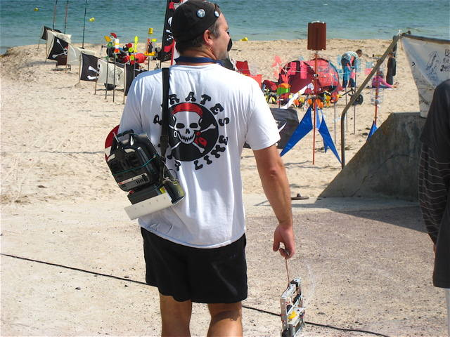
Jean-Claude, le trésorier des Pirates, part pour faire de la photo avec son Rokkaku...

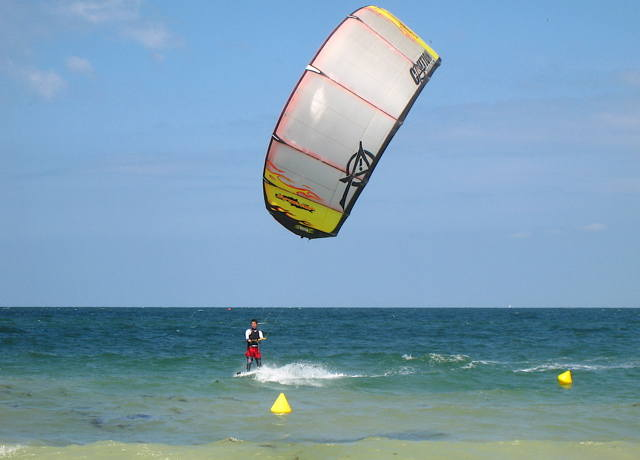
Les kiters font des petites sorties d'entraînement. Pas trop de vent pour eux, alors ils sortent des voiles à ne manier que par des pros !

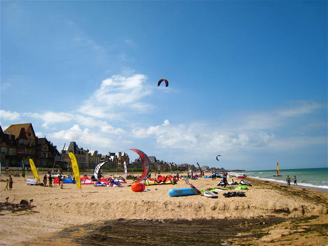
Ca y est, toutes les voiles sont gonflées (je veux dire avec la pompe) et quelques-unes se lèvent, la compétition n'est pas loin...

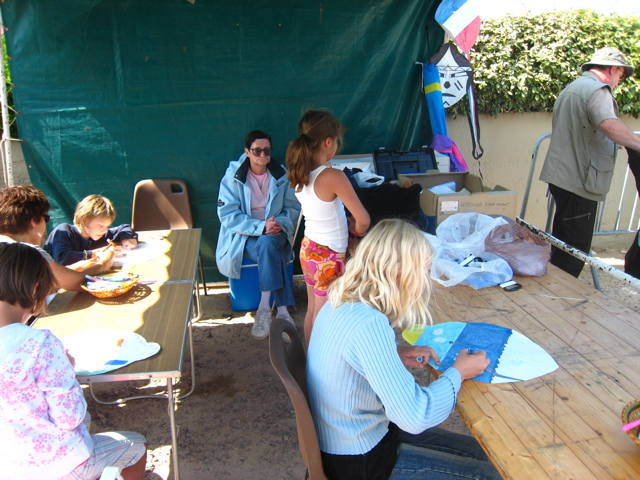
Côté cervolistes, l'atelier (gratuit) de construction de cerfs-volants pour enfants est ouvert et tourne bien...

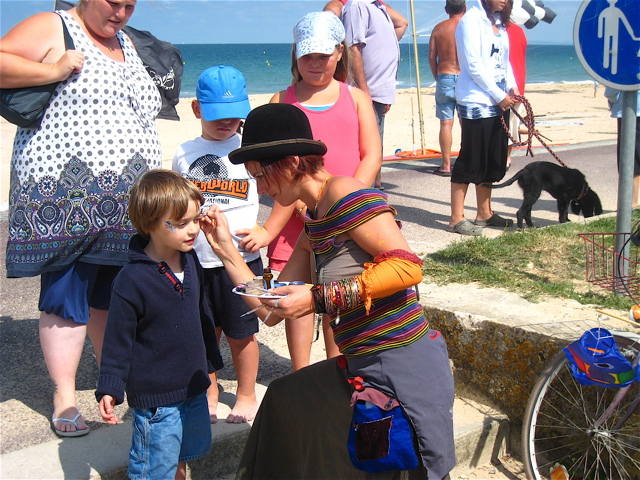
Une charmante maquilleuse réalise sur les enfants ou les plus grands de jolies décorations très délicates, pas des tartines de maquillage...

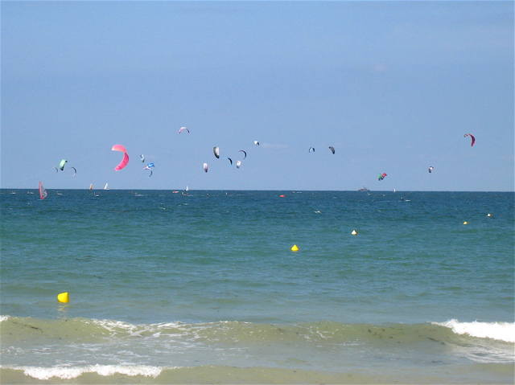
Ca y est, la régate est partie, il y a des voiles dans tous les sens...

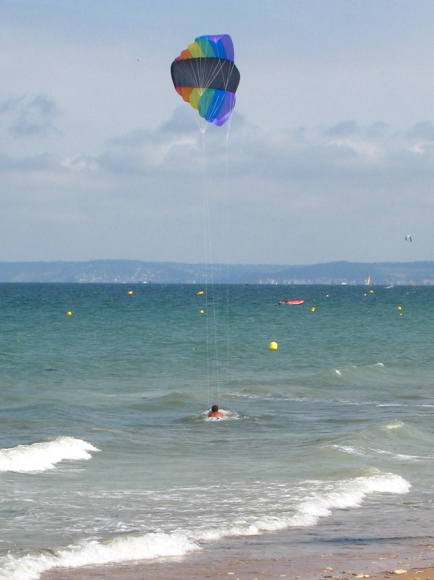
William est jaloux, mais il n'a pas de planche ! Alors il se jette à l'eau avec les godasses et le pantalon et se lance dans le body-kite...

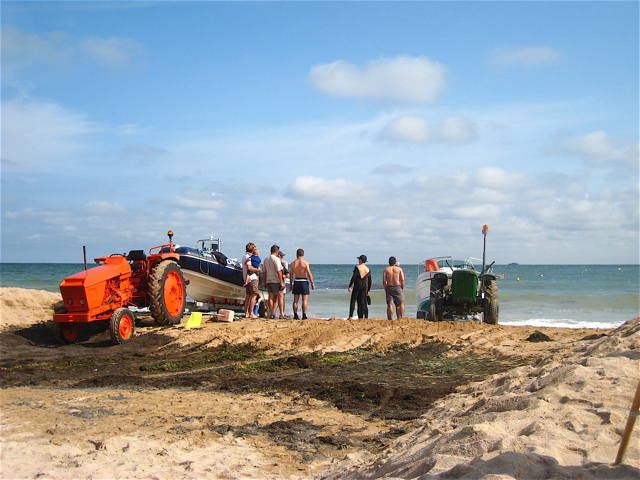
Les pêcheurs continuent, malgré le peu de succès, à se faire mettre à l'eau et remonter par des tracteurs à la limite du patinage sur la bosse...

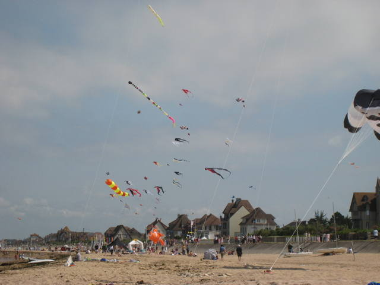
Du monde en l'air chez nous, mais aussi devant la place Courbet, où un marchand, Air-One(Erwan ?), a établi sa boutique au bord de l'autre tente noire et lève des cerfs-volants... du commerce !

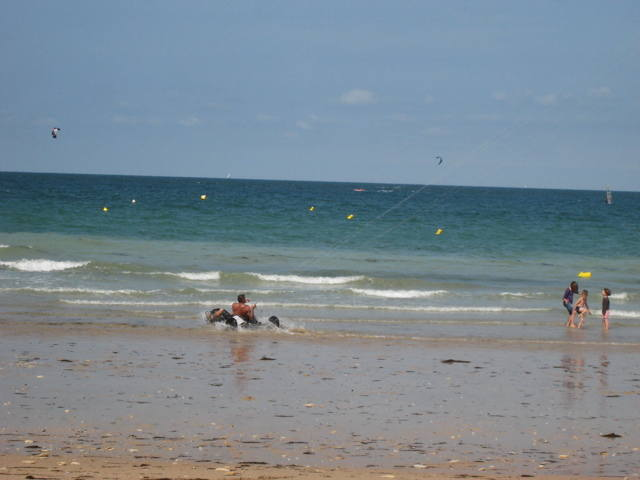
William a maintenant switché pour le char, mais il continue à aller à l'eau, et avec de l'élan !

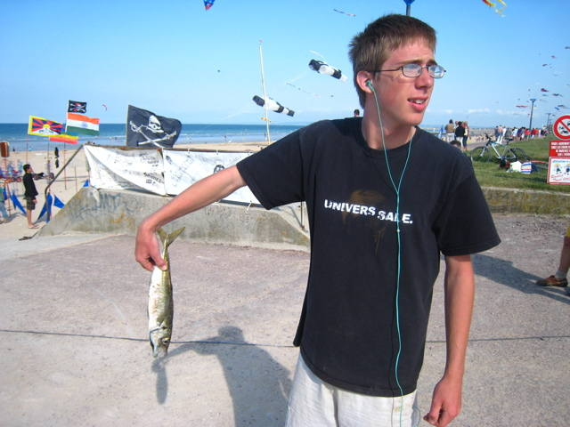
Il a tellement été violemment dans l'eau qu'un poisson s'est jeté dans son char ! Il s'est empressé bien sûr de l'estourbir !

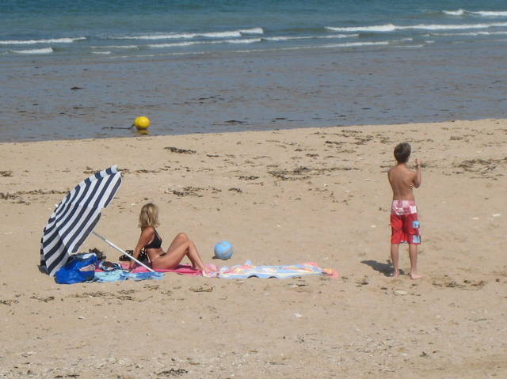
Sur la plage, une vedette de cinéma (sans doute) pose pour les photos publicitaires !

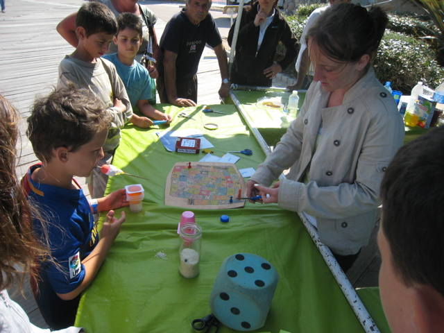
Sur la promenade, plein de jeux pour les petits comme pour les grands, avec des tours de main et des trucs plus ou moins magiques ou scientifiques...

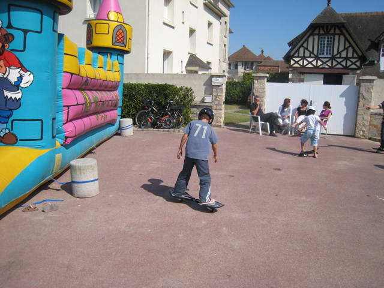
Evidemment, un château gonflable, mais manquant de relief, et les skates articulés à 2 roues seulement !

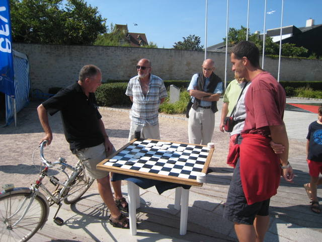
Il y a aussi un grand jeu de dames...

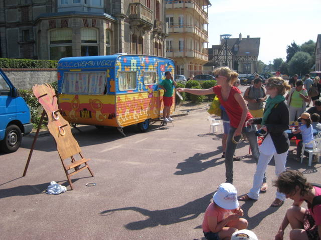
Un jeu d'anneaux en cordage à accrocher sur une planche dotée d'excroissances !

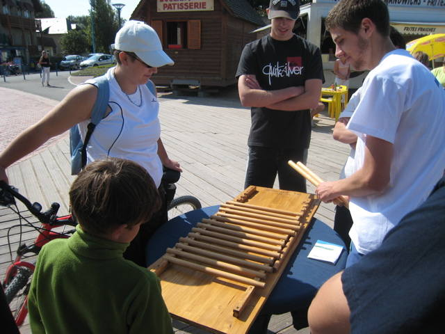
Et un jeu d'allumettes (géantes les allumettes !) : celui qui prend la dernière a perdu...

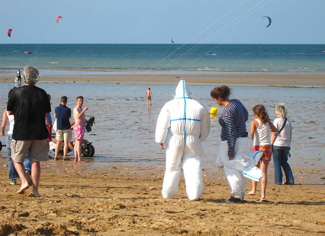
William fera aussi du char en double avec un char sans roue avant en remorque ! Vu l'état de la plage, il vaut mieux bien se protéger, William, lui, ne craint plus rien !

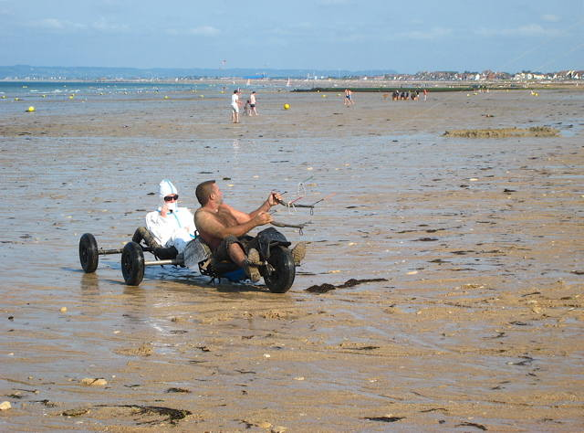
La passagère se protège du mieux qu'elle peut, mais ça empêche un peu de jouir de la course !

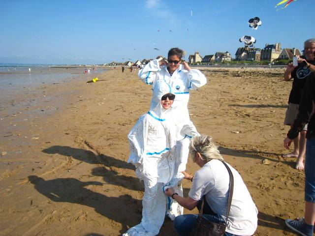
La combinaison en Tyvek sert pour tout le monde et est très seyante...

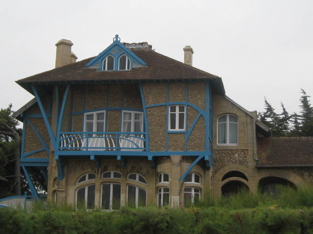
Encore un petit tour sur la promenade pour aller déjeuner près de la Mairie de Lion. Cette villa me plaît beaucoup et est, paraît-il, très connue comme exemple d'Art Déco ! Après renseignement, elle est d'Hector Guimard (voir http://www.hermanvillesurmer.fr/periode_estivale.asp ).

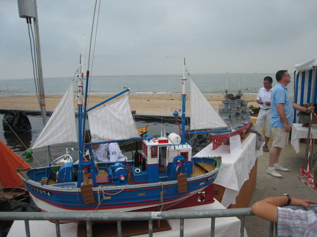
Des maquettistes présentent leurs oeuvres, particulièrement soignées...

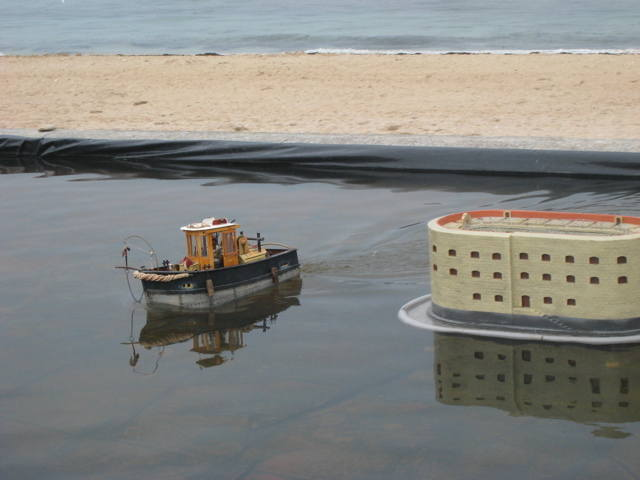
Les maquettes sont évidemment motorisées et télécommandées dans cette piscine de circonstance !

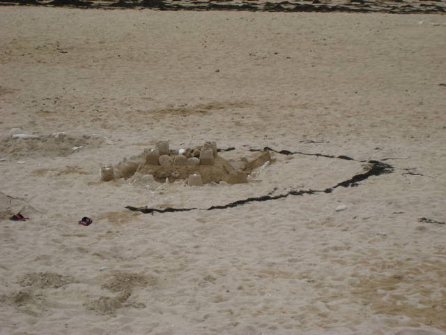
Parmi les attractions, il y a eu un concours de châteaux de sable. Celui-ci a du y faire bonne figure !

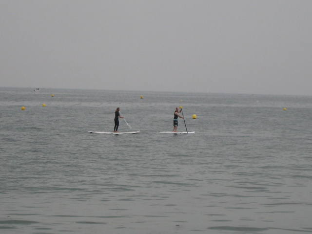
Profitant du calme du vent et de la mer, une démonstration de pagayage sur planches. Ces dernières sont plus larges et plates que celles de surf... J'ai connu ça dans ma jeunesse, en Méditerranée, sur Cygnaski, des sortes de planches avant la lettre en contreplaqué courbé, évidemment beaucoup plus lourdes...

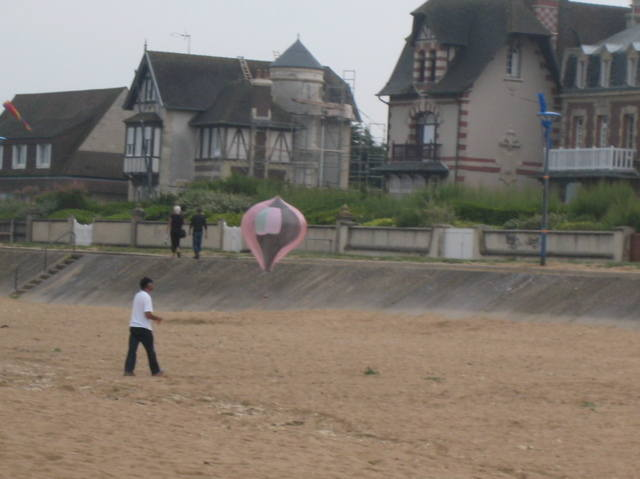
Profitant du vent faible, Emmanuel Duba volette avec son ballon solaire ! Mais il y a quand même peu de soleil et un peu de vent, et le ballon ne vole que quand Emmanuel marche pour le compenser...

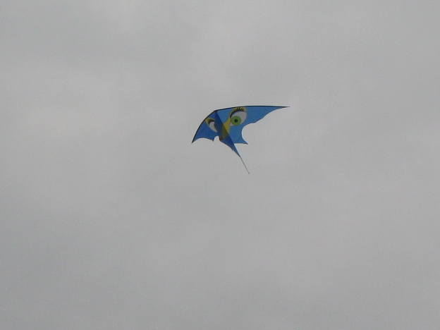
Faute de Manta, que Gaby a quand même sauvée à Brouilly, je sors mon Harfang qui volera longtemps... Joël monte son Zener'Vent avec difficulté au début et mieux quand le vent montera un peu...

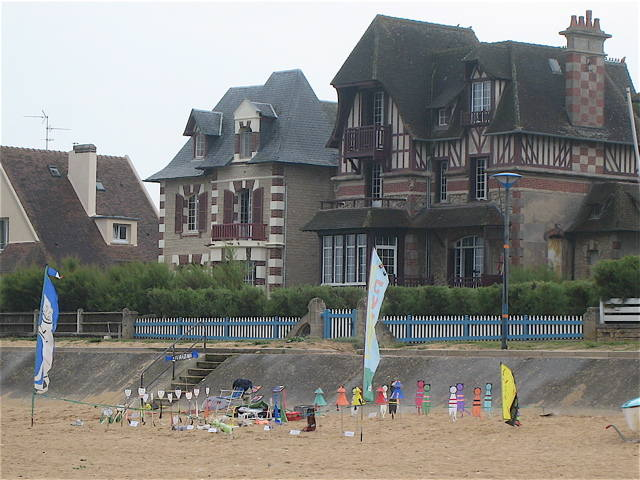
Emmanuel a bien sûr monté son JdV de chats, un peu à l'écart, mais avec vue imprenable depuis la promenade...

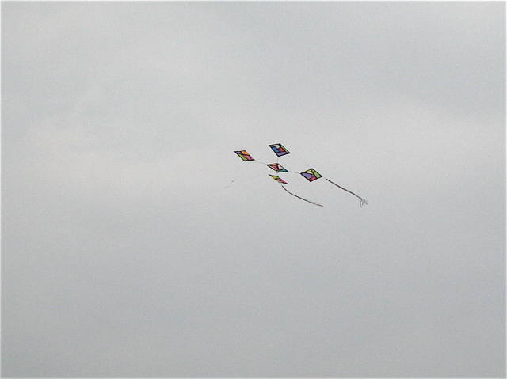
Il volera aussi un peu avec son quintuple carré dont la fenêtre de vent est assez étroite...

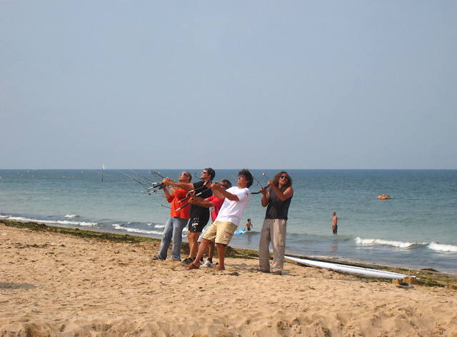
En fin d'après-midi, les Pirates se lancent dans leur présentation de groupe en Nasas légères !

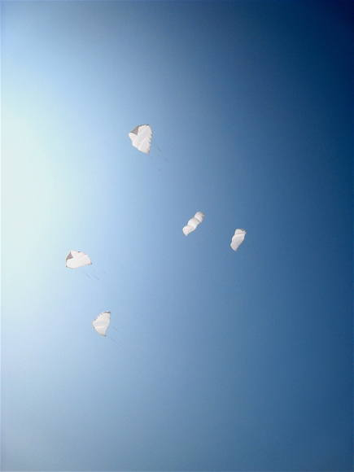
Les voiles font un beau ballet dans le ciel, même s'ils répètent assez peu ensemble...

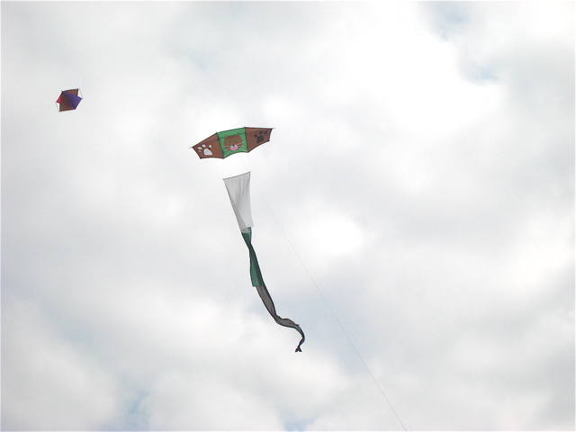
Emmanuel, du coup, sort son Genki à traîne, d'inspiration féline...

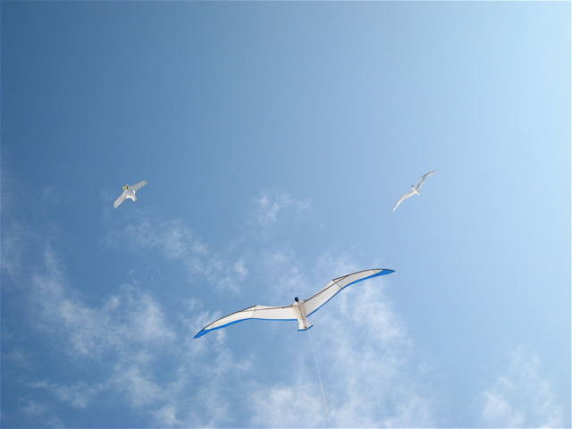
J'ai d'abord sorti mon Harfang, puis, à mesure de la montée du vent, mon Spiralier-Goeland, puis Megoel, mon Goéland de 8 m qui se portera bien jusqu'au soir...

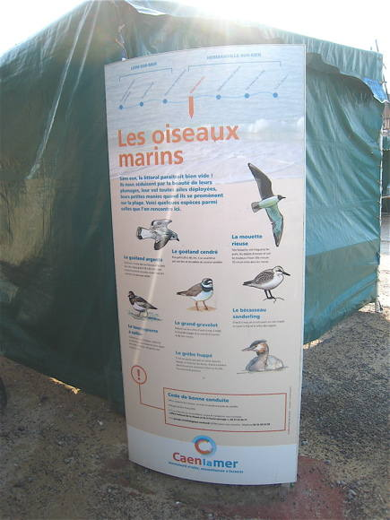
Pour me soutenir, la commune a érigé un panneau sur les oiseaux marins, bravo...

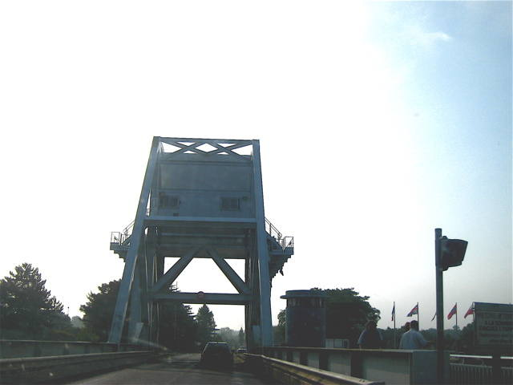
Après une bonne nuit tout seul, je prends tranquillement la route via Pegasus Bridge. Sa capture par des commandos britanniques arrivés de nuit par planeurs est un des hauts-faits du débarquement de Normandie le 6 juin 1944. Encore célèbre, il voit toujours fleurir boutiques de souvenirs et micro-musées...

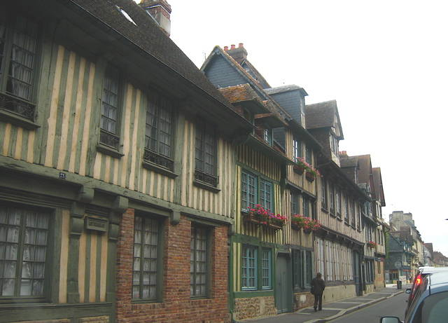
Et je traverse pour le plaisir Pont-l'Evêque, célèbre pour son odorant fromage, mais aussi pour ses maisons anciennes à colombages, innombrables...

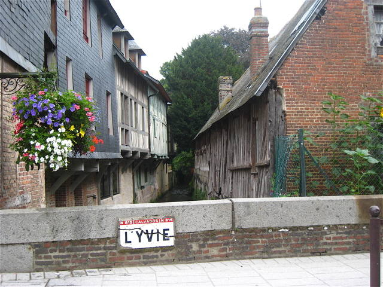
Dans Pont-l'Evêque, je traverse l'Yvie, au cours bordé de pittoresques maisons surplombantes !
Hermanville 2009 : Organisé par CaenLaMer, cet ensemble festivalier à l'organisation pas encore parfaite (les repas étaient fournis en pointillé...), a été une réussite qui a remué un peu Hermanville, Lion et leur belle plage ! A revoir l'année prochaine !